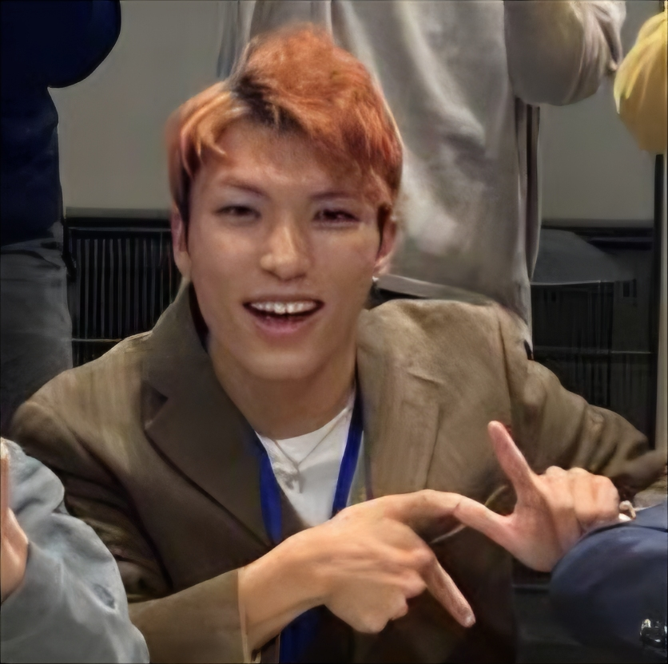
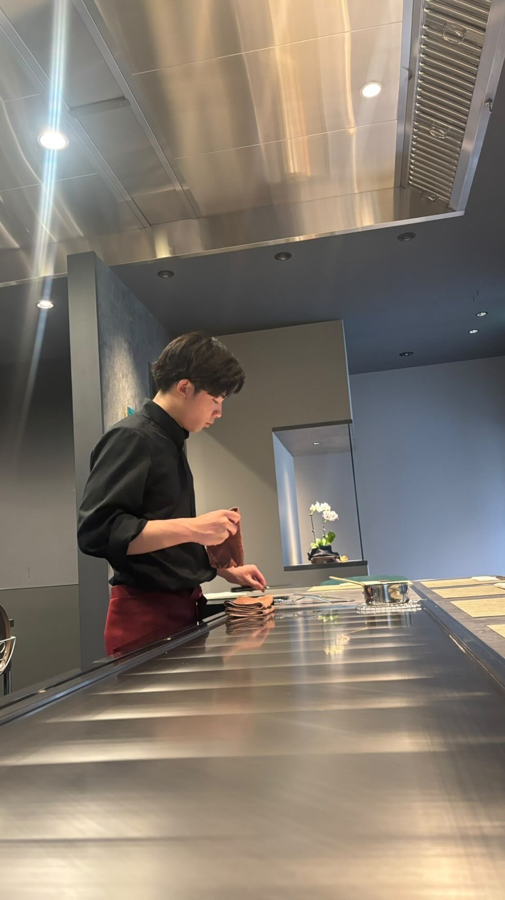

§ 03 MEMBERS
テクノロジーと農業を、
一人ずつ持ち寄る。
プロジェクトの実現可能性を、私たちは人で担保します。

奈良工業高等専門学校（19歳）
Shu MASUI
学生代表／担当：テクノロジー領域・プロジェクトマネジメント
スマート農業技術、NFT、配信システム、およびスタンプ生成など、プロジェクトのテック基盤の設計・開発全般と全体の進行管理を担当します。

天理大学（20歳）
Ryosuke TANIGAWA
専門技術代表／担当：農業・料理
現地での栽培計画、作物の状態管理、および収穫後の食事イベントのメニュー考案・調理監修を担当します。美味しく楽しい体験の要です。